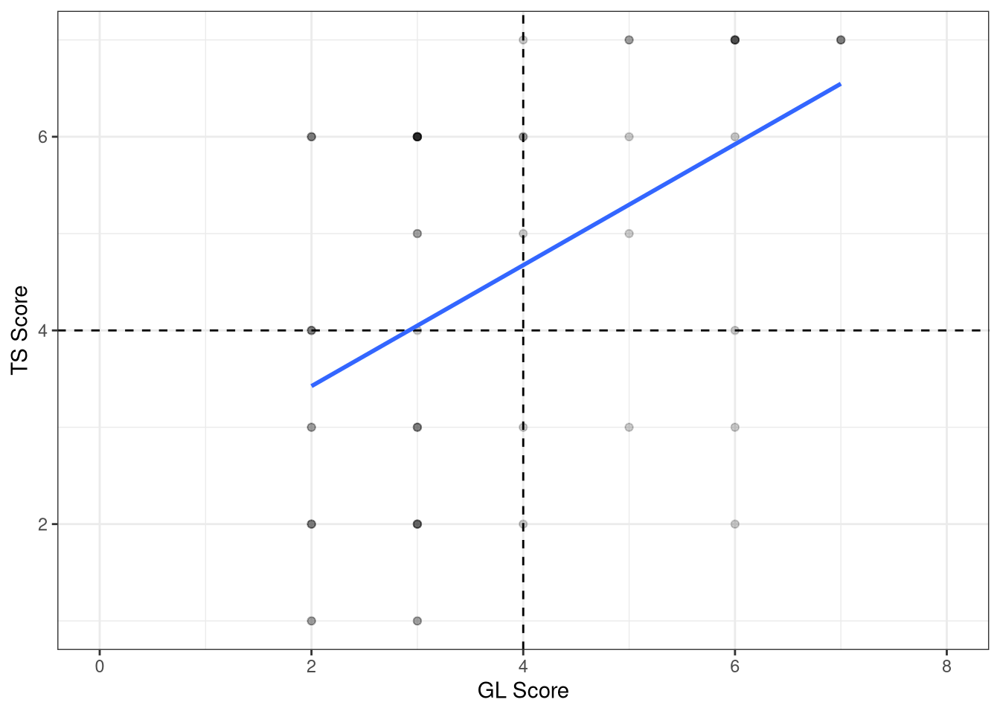
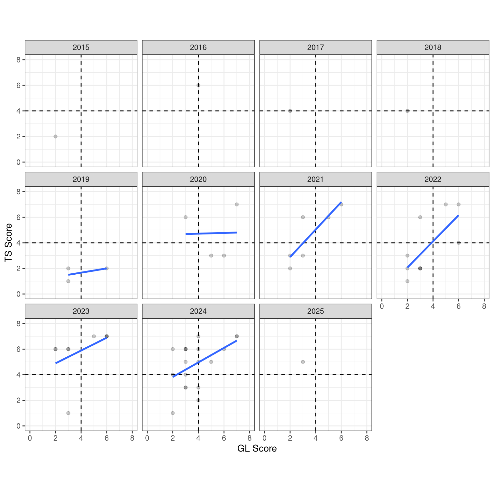

3D Plot
library(tidyverse)
ggplot(data = MikeData, aes(x = `GL Score`, y = `TS Score`)) +
geom_point(alpha = 0.2) +
geom_hline(yintercept = 4, lty = "dashed") +
geom_vline(xintercept = 4, lty = "dashed") +
theme_bw() +
xlim(0,8) +
geom_smooth(method = "lm", se = FALSE)`geom_smooth()` using formula = 'y ~ x'
library(tidymodels)
ggplot(data = MikeData, aes(x = `GL Score`, y = `TS Score`)) +
geom_point(alpha = 0.2) +
geom_hline(yintercept = 4, lty = "dashed") +
geom_vline(xintercept = 4, lty = "dashed") +
theme_bw() +
coord_obs_pred() +
xlim(0, 8) +
ylim(0, 8) +
geom_smooth(method = "lm", se = FALSE) +
facet_wrap(vars(Year))
mod <- lm(`TS Score` ~ `GL Score`, data = MikeData)
summary(mod)
Call:
lm(formula = `TS Score` ~ `GL Score`, data = MikeData)
Residuals:
Min 1Q Median 3Q Max
-3.9231 -1.4872 0.4524 1.4199 2.5751
Coefficients:
Estimate Std. Error t value Pr(>|t|)
(Intercept) 2.1758 0.6254 3.479 0.001003 **
`GL Score` 0.6245 0.1540 4.056 0.000162 ***
---
Signif. codes: 0 '***' 0.001 '**' 0.01 '*' 0.05 '.' 0.1 ' ' 1
Residual standard error: 1.799 on 54 degrees of freedom
Multiple R-squared: 0.2335, Adjusted R-squared: 0.2193
F-statistic: 16.45 on 1 and 54 DF, p-value: 0.0001615mod_base <- lm(`TS Score` ~ `GL Score` + as.factor(Year), data = MikeData)
summary(mod_base)
Call:
lm(formula = `TS Score` ~ `GL Score` + as.factor(Year), data = MikeData)
Residuals:
Min 1Q Median 3Q Max
-4.2494 -1.1849 0.0000 0.9854 2.7197
Coefficients:
Estimate Std. Error t value Pr(>|t|)
(Intercept) 0.7211 1.6750 0.430 0.668945
`GL Score` 0.6395 0.1530 4.180 0.000136 ***
as.factor(Year)2016 2.7211 2.3490 1.158 0.252957
as.factor(Year)2017 2.0000 2.3290 0.859 0.395145
as.factor(Year)2018 2.0000 2.3290 0.859 0.395145
as.factor(Year)2019 -1.6123 1.9261 -0.837 0.407084
as.factor(Year)2020 0.6718 1.9072 0.352 0.726353
as.factor(Year)2021 1.5408 1.7936 0.859 0.394953
as.factor(Year)2022 0.6408 1.7424 0.368 0.714809
as.factor(Year)2023 2.6100 1.7627 1.481 0.145823
as.factor(Year)2024 1.6978 1.7117 0.992 0.326673
as.factor(Year)2025 2.3605 2.3340 1.011 0.317378
---
Signif. codes: 0 '***' 0.001 '**' 0.01 '*' 0.05 '.' 0.1 ' ' 1
Residual standard error: 1.647 on 44 degrees of freedom
Multiple R-squared: 0.4766, Adjusted R-squared: 0.3457
F-statistic: 3.642 on 11 and 44 DF, p-value: 0.001034